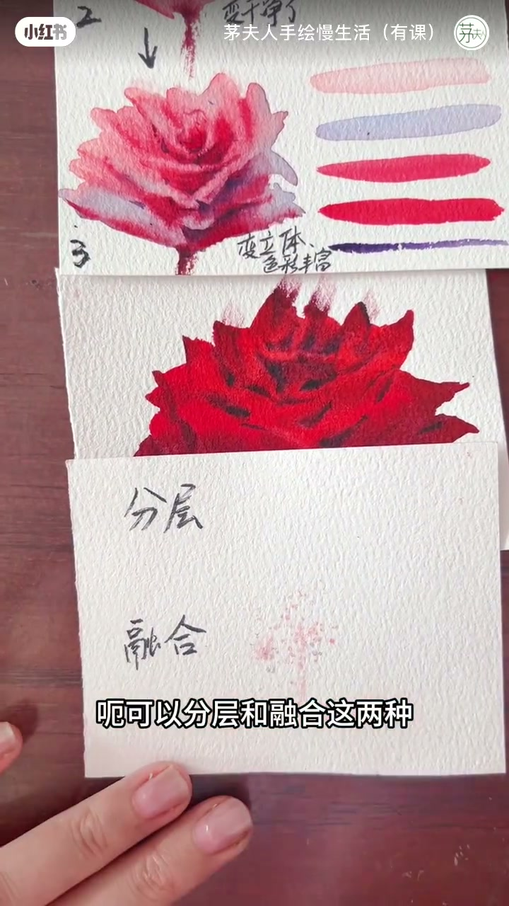
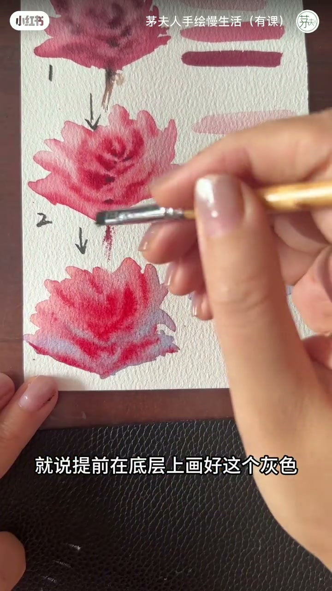
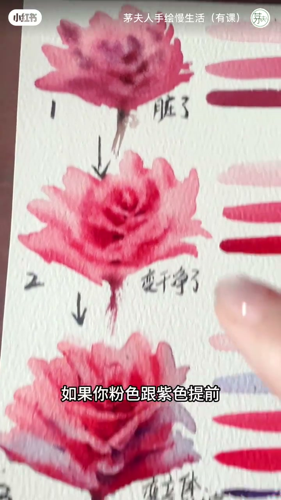
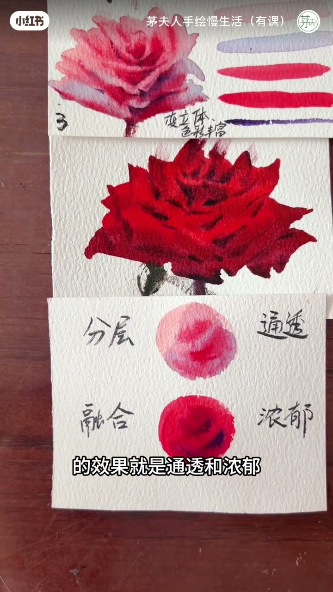

内容要点
全程一个说话人，账号角标是「茅夫人手绘慢生活（有课）」。笔记标题问的是浅粉和深红的暗部有什么区别。她为什么选这两朵花、用的是哪一管颜料，视频没有交代。纸上的字和烧录字幕可以核对口播，比例和等待时间没有写出来。
知识结构
粉色花朵和大红花朵的暗部可以分开处理。分层给浅色系：暗色先画在底层，干净粉色再叠上去。她把水彩说成半透明，底色透上来，暗部才会通透，也不显脏。听写里的「照染」按这个操作理解，字幕没有把这两个字完整打出来。
示范是底层先铺灰色，右下角带一点蓝色，然后「通过提纯的方式」把暗部画上去。00:39 的烧录字幕也写着提纯，所以这个词保留。粉色和紫色若先在调色盘里搅匀，她指着上面那朵说会脏。
浓郁型大红玫瑰反过来：两个颜色先搅匀再画，名字叫融合。她说这一路不追求通透，追求浓郁。红色里加点紫色，叠上去刻画。收束写在纸上：分层对通透，融合对浓郁。
浅粉暗部不要先在盘里把粉和紫搅死，先铺紫蓝灰，再叠干净粉色。大红可以先把红和暗色搅匀，接受更闷、更浓的一层。脏与干净、通透与浓郁，都是她对照自己这两张范例说的，不是所有水彩花的通例。
00:00–00:32
浅粉暗部走分层，大红先被放在另一张纸上
开场她直接对题。粉色花朵的暗部和大红色画暗部，用色方法可以有所区分。两种做法的名字马上写在最下面那张纸上：分层，融合。上面分层用来画浅色系花朵的暗部。

浅色系的暗部，她问的是粉色加一点暗色。做法不是立刻在盘里调好再铺，而是提前把暗色画在底层。她举的暗色是紫色、蓝色、灰色。然后把干净的粉色叠上去。听写这里是「在照染的方式」。画面这一段没有颜料瓶，只能按她说的顺序记：底先有暗色，上面再盖干净粉色。水彩课里这种干后叠色常被叫罩染；片中字幕没有完整打出「照染」或「罩染」，正文不把颜料比例写成定论。
「可以分层和融合这两种。上面分层呢你可以用来画浅色系花朵的暗部。」
叠完之后她要的效果有两句。一句是暗部「既生下去了」，同时又不会显脏。按前后文，「生下去」是暗部变深、沉下去；这个字没有字幕可对，转录仍保留原词。另一句把原因放在材料上：水彩半透明，底色又有点透上来，暗部就会通透。半透明是她的说法，视频没有做透光实验。
「因为水彩半透明，它底色又有点透上来，就会呈现出一种暗部又很通透的感觉。」
00:32–00:51
先铺灰、右下角带蓝，粉和紫先搅匀会被说脏
大约三十四秒她让人看这种画法。底层先画好灰色，右下角有点蓝色。再往下，口播和烧录字幕都说到「提纯」：然后再通过提纯的方式，把暗部画上去，就会很干净。提纯在 00:39 的字幕里能读到，不改成别的术语。画面上是同一张纸的三朵花，笔停在中段，对应她说的底层灰色。

对照马上出现。如果粉色跟紫色提前在调色盘上搅拌均匀，她说就会像上面那样脏了。四十四秒这张纸把三朵标成 1、2、3：1 旁边写「脏了」，2 旁边写「变干净了」，3 写「变立体」。手指点在中间。字幕停在「如果你粉色跟紫色提前」，和口播是同一句的前半。

脏和干净是她对着这三朵下的判断。视频没有给出搅拌圈数，也没有说灰和蓝各加多少。能核对的是顺序：先在纸上有灰和一点蓝，再用她称为提纯的方式往上画；粉和紫先在盘里搅匀，则被她指成上面那朵的脏。
「如果你粉色跟紫色提前在调色盘上搅拌均匀呢，就会像上面那样脏了。」
00:51–01:15
大红玫瑰改融合，纸上写成通透对浓郁
四十七秒后她转向浓郁型的大红玫瑰。这一次允许在调色盘上把颜色搅拌均匀，再叠加上去，名字就是融合。两个颜色先搅匀，然后画上去。她把目标说死：不追求通透，追求浓郁。
例子是红色花朵。暗色搅拌完，红色里加点紫色，就出现她要的那种颜色，叠加上去刻画就可以。听写是「红色得加点紫色」。接近这一秒的烧录字幕写成「红色里加点紫色」，正文采用「里」。六十六秒前后，笔正在一块上红下暗的形状上涂，字幕是「我可以暗色搅拌完了」，和「搅拌完再叠」对得上。紫加多少、暗色是哪一种，画面没有标签。
「它不追求通透，它追求的是浓郁的这种效果。」
片尾把两条路收成四个字，写在最下面那张纸的两团颜色旁边。上面那团是分层、通透，下面那团是融合、浓郁。浅粉玫瑰和深红玫瑰还留在上方。字幕接到「的效果就是通透和浓郁」，和口播最后一句一致。视频在这里结束，没有示范叶子、背景或其他花色。

「那么这样两种方法出来的效果就是通透和浓郁。」